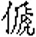

我所要说的几句话
陶元庆[265]君绘画的展览，我在北京所见的是第一回。记得那时曾经说过这样意思的话[266]：他以新的形，尤其是新的色来写出他自己的世界，而其中仍有中国向来的魂灵——要字面免得流于玄虚，则就是：民族性。
我觉得我的话在上海也没有改正的必要。
中国现今的一部分人，确是很有些苦闷。我想，这是古国的青年的迟暮之感。世界的时代思潮早已六面袭来，而自己还拘禁在三千年陈的桎梏里。于是觉醒，挣扎，反叛，要出而参与世界的事业——我要范围说得小一点：文艺之业。倘使中国之在世界上不算在错，则这样的情形我以为也是对的。
然而现在外面的许多艺术界中人，已经对于自然反叛，将自然割裂，改造了。而文艺史界中人，则舍了用惯的向来以为是“永久”的旧尺，另以各时代各民族的固有的尺，来量各时代各民族的艺术，于是向埃及坟中的绘画赞叹，对黑人刀柄上的雕刻点头，这往往使我们误解，以为要再回到旧日的桎梏里。而新艺术家们勇猛的反叛，则震惊我们的耳目，又往往不能不感服。但是，我们是迟暮了，并未参与过先前的事业，于是有时就不过敬谨接收，又成了一种可敬的身外的新桎梏。
陶元庆君的绘画，是没有这两重桎梏的。就因为内外两面，都和世界的时代思潮合流，而又并未梏亡中国的民族性。
我于艺术界的事知道得极少，关于文字的事较为留心些。就如白话，从中，更就世所谓“欧化语体”来说罢。有人斥道：你用这样的语体，可惜皮肤不白，鼻梁不高呀！诚然，这教训是严厉的。但是，皮肤一白，鼻梁一高，他用的大概是欧文，不是欧化语体了。正唯其皮不白，鼻不高而偏要“的呵吗呢”，并且一句里用许多的“的”字，这才是为世诟病的今日的中国的我辈。
但我并非将欧化文来比拟陶元庆君的绘画。意思只在说：他并非“之乎者也”，因为用的是新的形和新的色；而又不是“Yes”“No”，因为他究竟是中国人。所以，用密达尺[267]来量，是不对的，但也不能用什么汉朝的虑傂尺[268]或清朝的营造尺[269]，因为他又已经是现今的人。我想，必须用存在于现今想要参与世界上的事业的中国人的心里的尺来量，这才懂得他的艺术。
一九二七年十二月十三日，鲁迅于上海记。
注 释
[264] 本篇最初发表于1927年12月19日上海《时事新报》副刊《青光》。
[265] 陶元庆（1893—1929） 字璇卿，浙江绍兴人，美术家。曾任浙江台州第六中学、上海立达学园、杭州美术专科学校教员。鲁迅前期著译《彷徨》、《朝花夕拾》、《坟》、《苦闷的象征》等书的封面都由他作画。
[266] 作者在陶元庆第一回绘画展览时所说的话，即1925年3月16日所作的《“陶元庆氏西洋绘画展览会目录”序》（收入《集外集拾遗》）。
[267] 密达尺 法国长度单位Metre的音译，一译米突。后来为大多数国家所采用，通称为“米”。
[268] 虑

尺 东汉章帝建初六年（81）所造的一种铜尺。[269] 营造尺 清朝工部营造工程中所用的尺子，也称“部尺”，当时用作标准的长度单位。